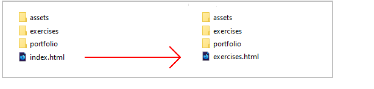
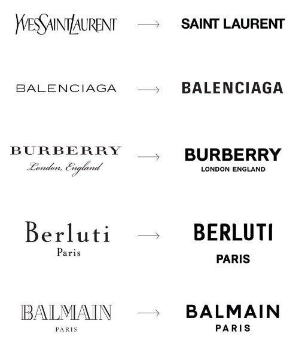
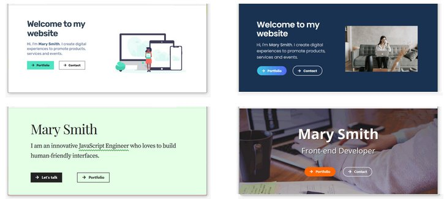
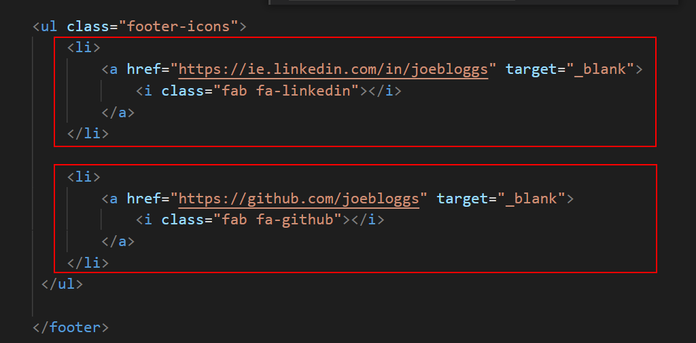

Introduction
In this project you will create your personal website, based on the following four web pages:
- Home page (in main folder)
- Privacy page (also in main folder)
- Portfolio page (in 📁 portfolio sub-folder)
- Contact page (in 📁 contact sub-folder)

For you inspiration, here are some sample portfolio websites from web designers and developers.
Portfolio project folders and files
Your first task is to create a sub-folder named 📁 contact to hold your new Contact web page.
Create this in your 'main' 📁 websites folder.
Project resources
Your next task is to obtain the text and visual content needed for this project.
Project Text
You will find some sample text for the pages in your portfolio website in the file below. Only <p> tags have been used for basic formatting.
You do not need to download this file. You can simply copy-and-paste from it.
Project web pages
In your 'main' websites folder, you already have a file named index.html. Before continuing, rename this file to exercises.html.
Download and save the following web page to three locations.
- Save one copy to your 'main' 📁 websites folder.
- Save one copy to your 📁 websites/portfolio sub-folder.
- Save one copy to your 📁 websites/contact sub-folder.
Project stylesheets
Download the following three stylesheet files to your 📁 websites/assets/css sub-folder.
Project images
Download the following four images to your 📁 websites/assets/img sub-folder.


That's it. You now have all the resources you need.
About your website logo
Three of your web pages will have a logo image positioned at the top-left in the menu or 'navbar'.
Your logo should be a png file that is exactly 200px wide and 40px tall.
When designing your logo, note that you are not creating a roadside billboard, which typically measure 12 metres wide by 3 metres tall.
You are designing a logo that must display legibly a mobile phone screen. Below you can see some examples of leading brands that have simplified their logos for modern digital screens.
Creating your new 'home' page
Follow these steps:
- In VS Code, open the following two files:
- websites/index.html
- websites/assets/css/custom.css
- Open the UI-Kit and create a new header of your choice. On the Buttons menu, accept the default option of Two.
- Use the Copy HTML and Copy CSS buttons to copy-and-paste your work to the index.html and custom.css files.
- Update the words with examples from the text.html file.
- In the index.html web page, update the two button hyperlinks as follows: <a href="portfolio/index.html" class="btn btn-secondary"><i class="fas fa-shopping-cart"></i> Portfolio</a> <a href="contact/index.html" class="btn btn-primary"><i class="fas fa-arrow-right"></i> Contact</a>
- Update the Font Awesome icons with more appropriate options.
- Replace the header image with one of your choice.
Your header or 'hero block' should now look similar to the examples below.
Next, create a three-column section under the header to showcase three of your projects. Here are the steps:
- Open the UI-Kit and create a new Three-column layout of your choice. Use theme-one. On the Buttons menu, choose your prefered button options.
- Use the Copy HTML and Copy CSS buttons to copy-and-paste your work to the index.html and custom.css files.
- In the index.html web page, update the three button hyperlink destinations as follows:
exercises/page-5.html
portfolio/smoothies.html
portfolio/fashion.html - Update the text of each button to 'View project' or similar.
- Update the Font Awesome button icon with more a more appropriate option.
Personalising your meta tags
Each of your three sample web pages contains template text for the page's title and description tags. These two tags are examples of so-called meta-tags.
Your first task in personalising the sample web pages is to update the content of the meta tags with text of your own choice. Follow the steps below.
- In VS Code, open your web pages.
index.html
📁 contact/index.html
📁 portfolio/index.html - In the <head> of each web page, in the title and description tags, replace the sample text with your own details.
Here are a few examples.
- Home page:

- Portfolio page:

- Contact page:

- Home page:
See the helpful links below for guidance on using the title and description meta tags on your web pages.
Meta tags: Further resources
What is a title tag?. From moz.com.
What is a meta description? From moz.com
Meta Tags for SEO: Definition, Examples, & Best Practices. From Neil Patel
Content Optimization Strategies: Meta Descriptions. From Brian Dean

DO NOT use the same meta tags on different web pages of the same website.
This 'confuses' Google and other search engines.
"When two, or more, of your pages contain similar title tags, it falls upon the search engine to try to determine which page the user really wants to see in their results. What happens is that some of your pages will get preferred ranking status, while others get ignored completely. " Source.
Personalising your web page footers
Follow these steps to update the content of the footers on the three sample web pages.
- Scroll down to the <footer> block of each page.
- Edit the template text as required.

- Edit the social media contacts points and remove links you do not want to use.  Typically, you will want to include only links to your GitHub account and your Linkedin profile page.
Adding a favicon to your web pages
A favicon is a small icon (really a set of icons for different screens) that is displayed within the browser tabs and bookmarks bar of a web browser.

If you have not already done so, create a favion. The instructions are here.
Place your favicon files in your websites/assets/img sub-folder.
When finished, add the favicon code to your three sample index.html web pages, to just below the description meta tag in the head. See the example below.
<link rel="apple-touch-icon" sizes="180x180" href="../../assets/img/apple-touch-icon.png"> <link rel="icon" type="image/png" sizes="32x32" href="../../assets/img/favicon-32x32.png"> <link rel="icon" type="image/png" sizes="16x16" href="../../assets/img/favicon-16x16.png"> <link rel="manifest" href="../../assets/img/site.webmanifest">
Updating the endpoint of your contact form
Your final step is to update your contact/index.html web page with the endpoint code you received from the Formspree website.
- In VS Code, display the contact/index.html web page.
- Update the form's action value by copying-and-pasting the endpoint value from Formspree. See the example shown below.

- Save your contact/index.html file.
You can check your sign up form is working by entering an email address and clicking the Send button.
You have now finished making the updates that apply to all three of the sample pages in your chosen website template.
Pre-upload checklist
Before uploading your files to GitHub, ensure you have performed all the updates in the following checklist.
- You have personalised the title and description meta tags in your three web pages. These two meta tags should be unique for each page.
- You have personalised the footer on each of your three web pages.
- You have replaced the sample logo image with your own logo image.
- You have added a favicon to each of your three web pages.
- You have updated the endpoint of your contact form with your unique ID from Formspree.
After you have uploaded your web pages and asset files to GitHub, it is a good idea to check that the hyperlinks between your web pages all work correctly.
You can use the Dead Link Checker website for this purpose.

You can ignore the following two apparent errors. This is a fault with the online link checker.

After performing all these changes, you have two further updates you need to apply to your three web pages:
- Add a link to Google Analytics.
- Add a 'pop-up' cookie privacy message.
Uploading your files to GitHub
After finishing your updates, you are now ready to upload your files to your account on GitHub.
- Open a new tab in your web browser and go to GitHub.com. If you are not already signed in to your GitHub account, sign in now.

- On your GitHub home page, click the ‘repo’ that holds your web pages. Its name will look as follows, where username is your chosen username on GitHub.
username.github.io

- On the next GitHub screen displayed, near the right of the screen, you can see a button named Add file. Click on it.

- From the dropdown list displayed, choose the option Upload files.

- In File Explorer (Windows 10) or Finder (Apple Mac), drag-and-drop your 'main' index.html file, and your 📁 portfolio, 📁 assets and 📁 contact sub-folders, to upload them to your repository on GitHub.

- Scroll down to the bottom of the GitHub screen, and accept or edit the short message (Add files via upload) in the Commit changes box.
- Finally, click the green Commit changes button to upload your files.

Your portfolio web pages are now published on GitHub at web addresses similar to the following:
https://username.github.io/index.html
https://username.github.io/portfolio/index.html
https://username.github.io/contact/index.html
Or, simply:
https://username.github.io
https://username.github.io/portfolio
https://username.github.io/contact
It may take a few minutes for your uploaded files to appear on GitHub.